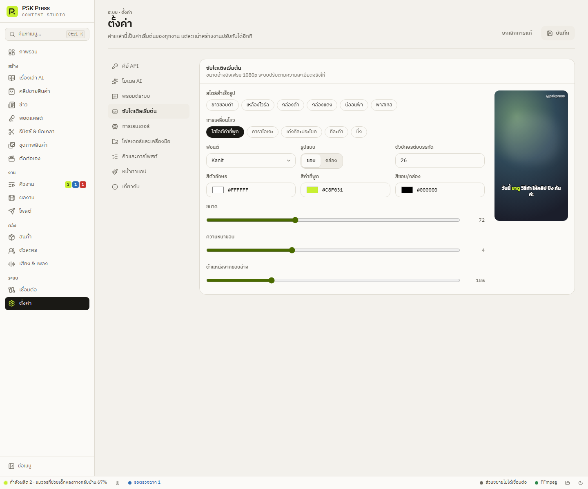
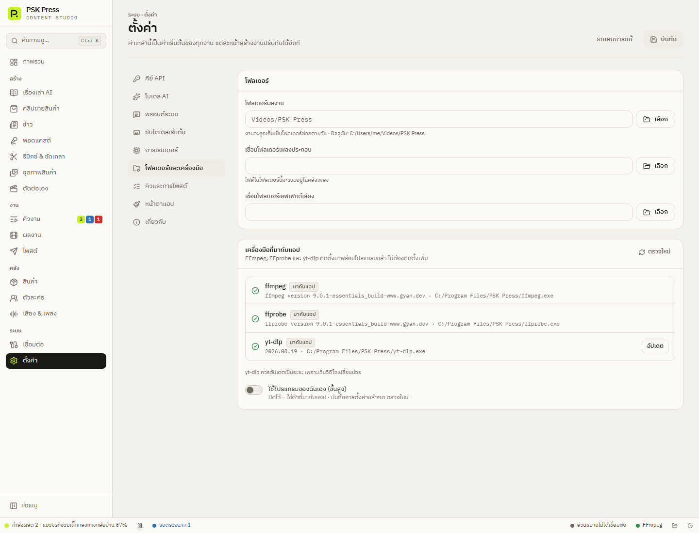
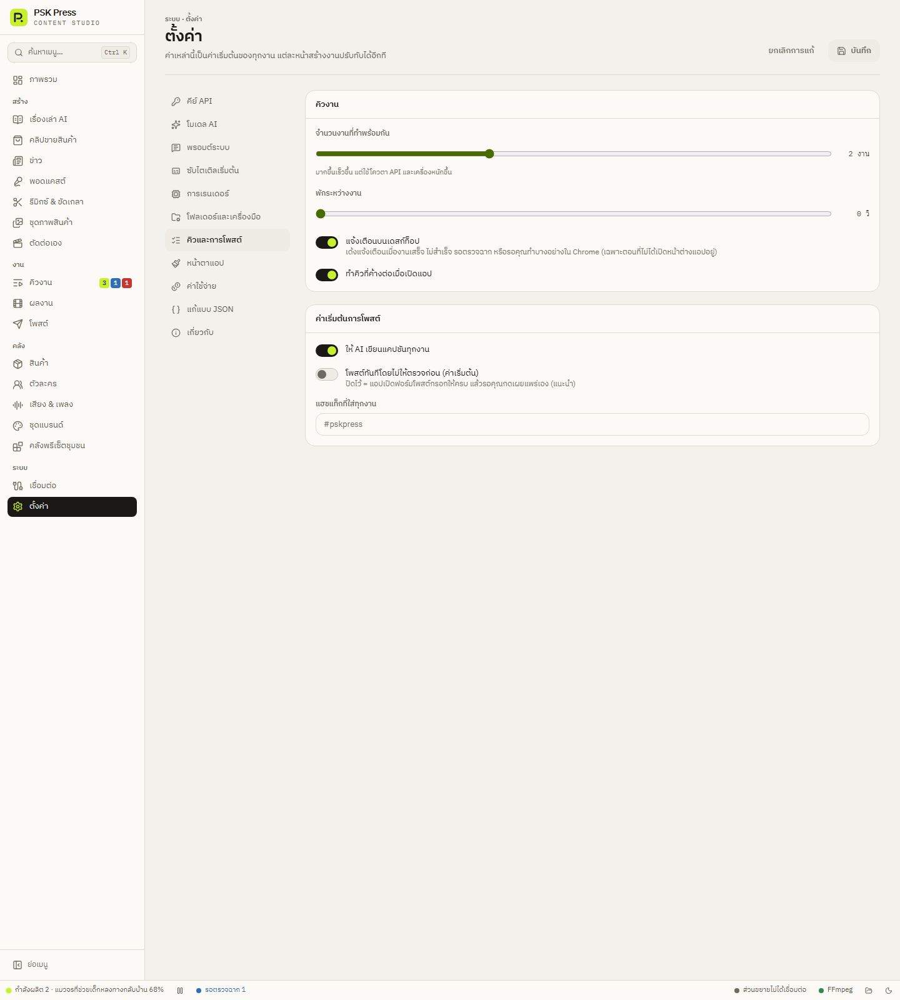
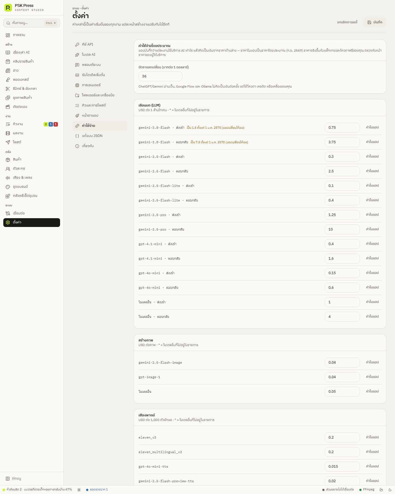

ระบบ
ตั้งค่าทั้งหมด
ทุกส่วนในหน้าตั้งค่า — คีย์ API โมเดล AI พรอมต์ระบบ ซับไตเติลเริ่มต้น การเรนเดอร์ โฟลเดอร์และเครื่องมือ คิวและการโพสต์ หน้าตาแอป ค่าใช้จ่าย แก้แบบ JSON และเกี่ยวกับ
ค่าในหน้านี้เป็นค่าเริ่มต้นของทุกงาน แต่ละหน้าสร้างงานปรับทับได้อีกที
- แก้แล้วกด บันทึก มุมขวาบน
- ถ้ายังไม่บันทึก จะมีป้าย ยังไม่ได้บันทึก — กด ยกเลิกการแก้ เพื่อย้อนกลับ
- ถ้าออกจากหน้าโดยยังไม่บันทึก แอปจะถาม: บันทึกแล้วไปต่อ / ทิ้งการแก้ / อยู่หน้านี้
คีย์ API
คีย์ของ Google AI (Gemini), OpenAI (GPT / Whisper) และ ElevenLabs (TTS) — ดูวิธีใส่และแต่ละคีย์ใช้ทำอะไรที่ ตั้งค่าครั้งแรก
โมเดล AI
ผู้ให้บริการและโมเดลของงานแต่ละประเภท:
- เขียนบท (LLM)
- สร้างภาพ
- เสียงพากย์เริ่มต้น
- ถอดเสียง
- วิดีโอ AI
รายละเอียดอยู่ที่ ตั้งค่าครั้งแรก ถ้าโมเดลที่เคยบันทึกไว้ไม่มีให้ใช้แล้ว แอปจะแจ้งเตือนแทนการเปลี่ยนให้เอง
พรอมต์ระบบ
แก้คำสั่งทุกข้อที่แอปส่งให้ AI — ดู พรอมต์ระบบ
ซับไตเติลเริ่มต้น
ค่าเริ่มต้นของซับในทุกงาน พร้อมตัวอย่างสด:
- สไตล์สำเร็จรูป, การเคลื่อนไหว, ฟอนต์
- รูปแบบ (ขอบ/กล่อง), ตัวอักษรต่อบรรทัด
- สีตัวอักษร, สีคำที่พูด, สีขอบ/กล่อง
- ขนาด, ความหนาขอบ, ตำแหน่งจากขอบล่าง
ความหมายของแต่ละช่องเหมือนใน การตกแต่ง → ซับไตเติล


การเรนเดอร์
การเข้ารหัสวิดีโอ
- ตัวเข้ารหัส — อัตโนมัติ / CPU (x264: ช้ากว่า แต่เข้ากันได้ทุกเครื่อง) / การ์ดจอที่ตรวจพบ (NVIDIA NVENC, Intel Quick Sync, AMD AMF) แอปจะแสดงเฉพาะตัวที่ทดสอบเข้ารหัสผ่านบนเครื่องนี้แล้ว
- คุณภาพ — ร่าง (เร็ว ไฟล์เล็ก) / มาตรฐาน / สูง
- ภาพนิ่งขยับช้า ๆ เป็นค่าเริ่มต้น
- ลายน้ำเริ่มต้น — เช่น @ชื่อช่อง
- ความดังเพลงประกอบเริ่มต้น
หน้าตัดต่อเอง
ค่าที่ใช้ในหน้า ตัดต่อเอง:
- ขนาดวิดีโอ (เช่น 1080×1920 ถึง 4K) และ FPS
- การ์ดเปิด-ปิด: ความยาวการ์ด, สีพื้นการ์ด, สีตัวอักษรการ์ด, ฟอนต์การ์ด (ว่าง = Kanit)
โฟลเดอร์และเครื่องมือ
- โฟลเดอร์ผลงาน — ที่เก็บวิดีโอที่เสร็จ (ค่าเริ่มต้น
Videos\PSK Press) - เชื่อมโฟลเดอร์เพลงประกอบ / เชื่อมโฟลเดอร์เอฟเฟกต์เสียง — ใช้ไฟล์ในโฟลเดอร์เดิมโดยไม่คัดลอก
- เครื่องมือที่มากับแอป — FFmpeg, FFprobe, yt-dlp พร้อมป้ายบอกที่มา (มากับแอป / อัปเดตแล้ว / กำหนดเอง / จากระบบ)
- ตรวจใหม่ — ตรวจว่าเครื่องมือใช้งานได้
- yt-dlp มีปุ่ม อัปเดต — กดเมื่อดาวน์โหลดคลิปจากเว็บไม่ได้
- ใช้โปรแกรมของฉันเอง (ขั้นสูง) — ระบุที่อยู่ FFmpeg/yt-dlp ที่ติดตั้งเอง


คิวและการโพสต์
คิวงาน
- จำนวนงานที่ทำพร้อมกัน 1–4 (ค่าเริ่มต้น 1)
- พักระหว่างงาน 0–300 วินาที
- แจ้งเตือนบนเดสก์ท็อป — เมื่องานเสร็จ ไม่สำเร็จ รอตรวจฉาก หรือรอคุณทำบางอย่างใน Chrome (เฉพาะตอนไม่ได้เปิดหน้าต่างแอปอยู่)
- ทำคิวที่ค้างต่อเมื่อเปิดแอป
ค่าเริ่มต้นการโพสต์
- ให้ AI เขียนแคปชันทุกงาน
- โพสต์ทันทีโดยไม่ให้ตรวจก่อน (ค่าเริ่มต้น) — ปิดไว้ (แนะนำ) = แอปกรอกฟอร์มโพสต์ให้ครบแล้วรอคุณกดเผยแพร่เอง เปิดแล้วแอปจะถามยืนยันก่อน
- แฮชแท็กที่ใส่ทุกงาน


หน้าตาแอป
- ธีม — ตามระบบ / สว่าง / มืด
- ย่อแถบเมนูด้านซ้าย
ค่าใช้จ่าย
แอปบันทึกว่าแต่ละงานใช้บริการ AI ไปเท่าไร (โทเคน ภาพ ตัวอักษรที่พากย์ วินาทีที่ถอดเสียง คลิป) แล้วคิดเป็นเงินจากตารางราคาในหน้านี้
- อัตราแลกเปลี่ยน — บาทต่อ 1 ดอลลาร์ ใช้แสดงค่าใช้จ่ายเป็นบาท
- ราคาต่อหน่วยแยกตามงาน: เขียนบท (ต่อ 1 ล้านโทเคน ส่งเข้า/ตอบกลับ) สร้างภาพ (ต่อภาพ) เสียงพากย์ (ต่อ 1,000 ตัวอักษร) ถอดเสียง (ต่อนาที) คลิปวิดีโอ (ต่อวินาที) · “โมเดลอื่น” ใช้กับโมเดลที่ไม่อยู่ในรายการ
- ราคาที่แก้เองมีป้าย แก้เอง กด ค่าในแอป เพื่อกลับไปใช้ราคาในแอป


ราคาที่ผู้ให้บริการประกาศว่าจะเปลี่ยน (เช่น Gemini 3.8 Flash ตั้งแต่ 1 ม.ค. 2570) มีหมายเหตุบอกไว้ข้างราคา และแอปเปลี่ยนให้เองในวันนั้น ค่าใช้จ่ายของแต่ละงานคิดตามราคาในวันที่ทำงาน
แก้แบบ JSON
การตั้งค่าทั้งหมดและพรีเซ็ตทุกหน้าในรูป JSON แยกเป็นส่วน มีคำอธิบายทุกค่า ส่งออกให้เครื่องอื่นและนำเข้าได้ ดู คลังพรีเซ็ตชุมชนและแชร์การตั้งค่า
เกี่ยวกับ
ปุ่ม เปิดตัวช่วยตั้งค่าอีกครั้ง เปิดตัวช่วยตั้งค่าครั้งแรก · แผง แจ้งปัญหาและบันทึกการทำงาน (log) มี แจ้งปัญหา… คัดลอกข้อมูลแจ้งปัญหา และ เปิดโฟลเดอร์บันทึก (log) ดู แจ้งปัญหาให้ผู้พัฒนา
แสดงเวอร์ชัน ปุ่ม ตรวจหาอัปเดต สัญญาอนุญาตของส่วนประกอบที่มากับแอป:
- FFmpeg (GPLv3)
- yt-dlp (Unlicense)
- ฟอนต์ (SIL Open Font License)
และข้อความความรับผิดชอบต่อเนื้อหา ดู ติดตั้งและอัปเดต